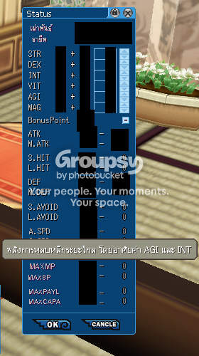

กระทู้ไหม่เหรอ นิ
กระทู้ไหม่เหรอ นิ
แหล่มๆ
มาขอขุดความรุ้มั้งเด้อ
 โดย ECO » อังคาร 06 ม.ค. 2009 5:08 pm
โดย ECO » อังคาร 06 ม.ค. 2009 5:08 pm
Ruk[z']_Val[v]e เขียน:ท่าเล่น ปืนไป ซักพัก เเล้วจะ รู้สึก ว่า ไม่อยาก เข้าไปไกล้ๆ เลยอะ ยิงไกลๆ เอาดีก่า
เข้าปายทำมาย เสี่ยง โดน ฟัน หัว เเบะ อัพเปอร์ก็ไช่ว่าจาเเรงเลย นิ๊
สาย เอจิ มีโอกาศ ที่ ปืน ตบมิส มากก่า Vit นะ เพราะ อัพ agi ก็ได้ L.avoid เเต่ น้อยกว่า อัพ int นะ
ปล.ทำไง ดี เปลี่ยน ลายเซ็นไม่ได้ เปลี่ยนรูป ก็ไม่ได้ บักเเหลกเลย บอร์ด นี้ อะ = =
 โดย ECO » อังคาร 06 ม.ค. 2009 5:10 pm
โดย ECO » อังคาร 06 ม.ค. 2009 5:10 pm
Nitro_Z เขียน:แอบมา
จันทร์ - ศุกร์ เล่นไม่ได้ เซ็ง
Tan555 เขียน:Nitro_Z เขียน:GP เขียน:ลากเข้าฝั่งแป๊ป -*-
คอมมานโด่ผมเป็นสายปืน แต่ใจยังรักการวิ่งเข้าไปอัดใกล้ๆอยู่ และนี่คือสกิลที่ผมมี
ปืนมาสเตอร์ 5
มาเชี่ยลมาสเตอร์ 3
ยิงรัว 5
อัปเปอร์ 5
ระเบิดแสง 5
ตอนนี้ผมจ๊อบ42 มีสกิลไหนแนะนำมั่งมั้ย?(ส่วนตัวเล็งเคลย์มอร์ไว้ละ)
เป็นปืน แต่รักที่จะตีประชิด เราขอแนะนำ "Wild Dance"
ด้วยดาเมจที่แรง + การที่ปืนใช้ความแม่นย่ำเป็น int ทำให้สาย agi หลบไม่ได้
ทำให้สกิลนี้ เมื่อปืนใช้ เทพกว่าให้มีดใช้เสียอีก
ผมเล่นแอสพิษผมก้อว่าผมหลบได้นะ
เนื่องจากปืน นับความแม่นย่ำจาก L.Hit อะงิ
สาย VIT และ สาย AGI ก็เลยมีโอกาศโดนเท่าๆ กันนั้นเอง
เพราะการจะหลบการโจมตีของปืน , ธนู , ขว้าง จะต้องใช้ค่า "Int" ไม่ใช้ค่า "Agi"
ค่า AGI ทำให้ฟันเร็วขึ้น และ เพิ่มอัตตราการหลบหลีกจะการโจมตีระยะประชิดเท่านั้นงิ

 โดย ECO » อังคาร 06 ม.ค. 2009 8:35 pm
โดย ECO » อังคาร 06 ม.ค. 2009 8:35 pm

๛กวีแห่งความโศก เขียน::first01: Sudden stack โหดมั้ยอ่ะ ถ้าเล่น สนับมันเรียกไปแค่ 5 ก็ Claw Stike AU สกิลคริของแอสอ่ะนะ Claw masterry Critical Damage ถ้าจะเอาซัดเดินไปแล้ว Cloaking หละ - -*
ปล.ขนาดเวลไม่ถึงคิดขนาดเน้ - -*

 โดย ECO » พุธ 07 ม.ค. 2009 5:47 am
โดย ECO » พุธ 07 ม.ค. 2009 5:47 am
westlykung เขียน:Ruk[z']_Val[v]e เขียน:ท่าเล่น ปืนไป ซักพัก เเล้วจะ รู้สึก ว่า ไม่อยาก เข้าไปไกล้ๆ เลยอะ ยิงไกลๆ เอาดีก่า
เข้าปายทำมาย เสี่ยง โดน ฟัน หัว เเบะ อัพเปอร์ก็ไช่ว่าจาเเรงเลย นิ๊
สาย เอจิ มีโอกาศ ที่ ปืน ตบมิส มากก่า Vit นะ เพราะ อัพ agi ก็ได้ L.avoid เเต่ น้อยกว่า อัพ int นะ
ปล.ทำไง ดี เปลี่ยน ลายเซ็นไม่ได้ เปลี่ยนรูป ก็ไม่ได้ บักเเหลกเลย บอร์ด นี้ อะ = =
นายลงโคดผิดอ่ะมัรต้อง ใช้ [img]*****[/img] แบบนี้
 โดย ECO » พุธ 07 ม.ค. 2009 10:44 am
โดย ECO » พุธ 07 ม.ค. 2009 10:44 am
 โดย ECO » พุธ 07 ม.ค. 2009 6:56 pm
โดย ECO » พุธ 07 ม.ค. 2009 6:56 pm
icenotebook เขียน:แต่intช่วยได้เยอะกว่านะ การหลบระยะไกลน่ะ
ไม่เชื่อลองไปชนเดมสไนเปอร์สิ เอจิ108ไม่ช่วยเลย๛กวีแห่งความโศก เขียน::first01: Sudden stack โหดมั้ยอ่ะ ถ้าเล่น สนับมันเรียกไปแค่ 5 ก็ Claw Stike AU สกิลคริของแอสอ่ะนะ Claw masterry Critical Damage ถ้าจะเอาซัดเดินไปแล้ว Cloaking หละ - -*
ปล.ขนาดเวลไม่ถึงคิดขนาดเน้ - -*
แรงพอควรนะ เคยเห็นๆสายมีดแถวนี้ใช้มา แต่มันต้องหายตัวก่อน ยุ่ง+กินspพอควร
เพราะฉะนั้นมาเล่นเบลดเหอะ
/me แอบจูงคนเข้ามุมมืด
กำลังดูบอร์ดนี้: ไม่มีสมาชิก และ บุคคลทั่วไป 2 ท่าน

 Sudden stack โหดมั้ยอ่ะ ถ้าเล่น สนับมันเรียกไปแค่ 5 ก็ Claw Stike AU สกิลคริของแอสอ่ะนะ Claw masterry Critical Damage ถ้าจะเอาซัดเดินไปแล้ว Cloaking หละ - -*
Sudden stack โหดมั้ยอ่ะ ถ้าเล่น สนับมันเรียกไปแค่ 5 ก็ Claw Stike AU สกิลคริของแอสอ่ะนะ Claw masterry Critical Damage ถ้าจะเอาซัดเดินไปแล้ว Cloaking หละ - -*